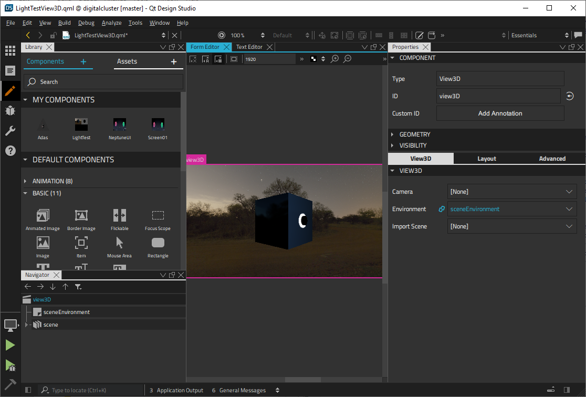

Tools for Qt Quick UIs

Qt provides a tool for designing Qt Quick UIs called Qt Design Studio. You need to separately select Qt Design Studio in the list of modules and tools presented to you by Qt Online Installer.
If you only design UIs and don't need the developer tools, you can install the stand-alone Qt Design Studio package. It contains all the Qt modules and tools you need to design UIs and preview them on the desktop. The Qt Quick code is automatically generated for you, and you can deliver it to developers for implementing the application. Developers can open the project in a developer tool called Qt Creator.